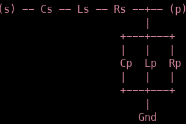

Usage¶
Installation¶
To install the program you’ll just have to move to go to the folder “dist” and run
(.venv) $pip install pyrftk2-2.0.0-py3-none-any.whl
A simple circuit¶
import matplotlib.pyplot as plt
from pyRFtk import rfCircuit, rfTRL, rfRLC
from pyRFtk.config import setLogLevel
from pyRFtk import plotVSWs
TRL1 = rfTRL(L=1.1, OD=0.230, ID=[0.100, 0.130], dx=360) # a conical TL
TRL2 = rfTRL(L=1.1, Z0TL=40, dx=360)
TRL3 = rfTRL(L=2, ports=['E', 'T'], Zbase=40, dx=360) # <- just for fun
RLC2 = rfRLC(Cp=100e-12)
ct = rfCircuit()
ct.addblock('TL1', TRL1, ports=['T', 'E'], relpos=TRL3.L)
ct.addblock('TL2', TRL2, ports=['T', 'E'], relpos=TRL3.L)
ct.addblock('TL3', TRL3)
ct.addblock('Cap', RLC2, ports=['E','oc'], relpos=TRL3.L + TRL2.L)
ct.connect('TL1.T', 'TL2.T', 'TL3.T')
ct.connect('TL1.E', 'Cap.E')
ct.terminate('Cap.oc', Y=0) # open circuit !
ct.terminate('TL2.E', Z=10) # finite impedance
maxV, where, VSWs = ct.maxV(f=55e6, E={'TL3.E': 1})
plotVSWs(VSWs)
plt.show()
rfTRL makes a radio frequency Transmission Line object, L is the length of the TL section, OD is the outer diameter, ID is the inner diameter, Z0TL is the characteristic impedance, Zbase is the reference impedance of the S-matrix representing the TL section and dx is the dimensional step along the TL used to solve the telegraphist’s ODE.
As can be seen in the definition of TRL1, we create a conical TL by specifying an inner diameter at the leftmost side of 0.1 and an inner diameter at the rightmost side of 0.13.
rfRLC can build a circuit structure as:
the kwargs are:
Zbase : reference impedance [50 Ohm]
ports : port names [[‘s’,’p’]]
Rp : parallel resistance [+inf Ohm]
Lp : parallel inductance [+inf H]
Cp : parallel capacity [0 F]
Rs : series resistance [0 Ohm]
Ls : series inductance [0 H]
Cs : series capacity [+inf F]
Here we only implement a parallel capacitor, i.e:

Now that we have our building blocks, it’s time to put them together in a circuit. To do this we create a rfCircuit() instance which we’ll call ct and add the blocks.
The first block which we’ll add is TRL1 which we’ll call ‘TL1’, we’ll label the leftmost port ‘T’ and the rightmost port ‘E’. As a reference point we’ll use the length of TRL3, then we’ll connect both TRL2 and TRL3 to the same input port ‘T’ and output port ‘E’ (note that we have specified the ports of TRL3 already in the block itself).
Now we’ll add our T-section
in which we labeled the source (s) as “E” and the output p as “oc”, we place this circuit part 1.1 from the place where we put our transmission lines.
These ports now need to be connected, we first connect all the ports labeled “T” and then all the ports labeled “E”. We then proceed to leave the circuit open at the righthand side (Y=0 means zero admittance at oc) and place a 10 Ohm impedance at E, terminating the circuit there.
In the end, our circuit thus looks like: